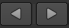
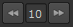

There are many useful tools at the top of the Viewer, some of which allow you to select layers and channels, adjust gain and gamma, and zoom and scale down the image in the Viewer.
The tools at the bottom of the Viewer allow you to adjust the playback settings, including setting the frame range, selecting the playback mode, and locking the Viewer playback range.
Drag the orange marker along the timeline to quickly cue to a specific frame. The number of the current frame appears below the center of the timeline. You can also cue to a frame by typing its number directly into this field.
TIP: The current frame and in an out point fields also accept simple mathematical functions, such as +/-20 to jump forward or backward 20 frames.
By default, Nuke automatically adjusts the timeline of every Viewer window to show the frame range defined in your Project Settings. If no frame range is defined, the frame range of the first image you read in is used as the global frame range.
Viewer timeline controls also have a frame range source dropdown menu that you can use to define where the timeline gets its frame range from. You can set this menu to Global, Input, or Custom. Global is the default setting described above.
The playback rate field (frames-per-second) displays the project’s playback speed. Nuke attempts to maintain this speed throughout playback, although this adjusts depending on the resolution of the imagery and your hardware configuration.
NOTE: The asterisk (*) denotes the playback speed selected using the Project Settings > Root > fps control.
To have the Viewer adjust the timeline to show the “in” and “out” frames of the current input clip, select Input from the frame range source dropdown menu. The number of the first frame in the clip is shown in the left end of the timeline and the number of the last frame in the right end. If you change the input of the Viewer, the frame range on the timeline is adjusted accordingly.
To manually adjust the frame range for the current Viewer window, pan and zoom on the timeline until you see the desired frame range and Custom becomes selected in the frame range source dropdown menu. Alt+drag to pan, and MMB+drag to zoom in. You can also zoom in on or out of the timeline using the mouse wheel. To reset the zoom, press the middle mouse button over the timeline.
To adjust the playback range for the current Viewer window, click+drag the red playback range markers on the timeline to a new “in” and “out” frames as shown below, or enter a new playback range in the playback range field and press the frame range lock button.
To toggle between the new playback range and the visible timeline range, click the lock frame button again.
The fps field (frames-per-second) initially displays the project’s playback speed. Nuke attempts to maintain this speed throughout playback, although this adjusts depending on the resolution of the imagery and your hardware configuration.
The following table lists the functions of the playback buttons:
|
Buttons |
Functions |
|---|---|
|
 |
The Play backward and Play forward buttons play the sequence backward or forward at the script’s frame rate. When you press a play buttons, it toggles to a stop a button. |
|
|
The Back 1 Frame and Forward 1 Frame buttons cue the sequence to the previous or next frame. |
|
|
The Previous keyframe and Next keyframe buttons cue the sequence to the script’s previous or next keyframe. |
|
|
The First frame and Last frame buttons cue the sequence to the first and last frame. |
|
 |
The Frame Increment field allow you to specify the number of frames by which the Previous increment/Next increment buttons cue the sequence. This is set to 10 frames by default. |
The Playback Mode button lets you control how many times and in what direction the Viewer plays back the sequence. Click the button to toggle between the following modes:
|
Button |
Function |
|
|
Repeatedly plays the sequence in a loop. |
|
|
Repeatedly plays the image back and forth from head to tail. |
|
|
Plays once through the section between in and out point and stops at the out point. If these are not marked, then it plays from the beginning to the end of the sequence. |
|
|
Plays once from the beginning to the end of the sequence, ignoring any in and out points. |


 for use of the above footage.
for use of the above footage.